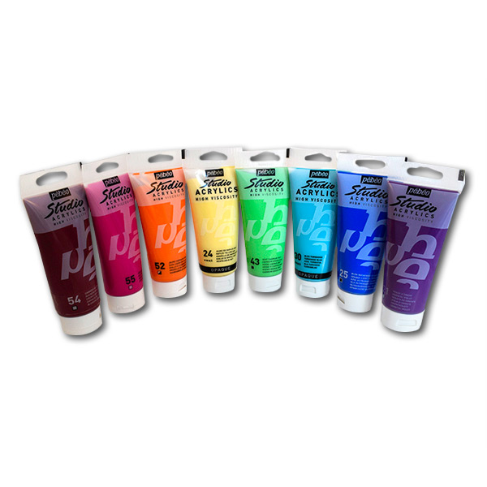

20 отметок нравится
Краска акриловая
краска, акрил
Французская акриловая краска «Studio Acrylics» от PEBEO для рисования на металле, дереве, холсте, картоне. Краски хорошо смешиваются, не смываются после высыхания, светостойкие, с хорошей адгезией. Благодаря своей густоте, краска сохраняет следы кисти или мастихина, подходит для создания объема. Краска готова к использованию.
Акриловые краски Studio Acrylics PEBEO, 100 мл